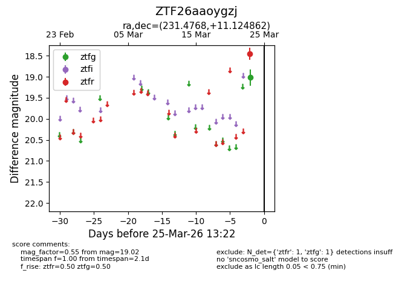
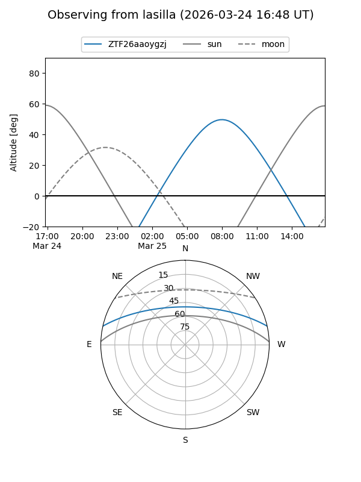
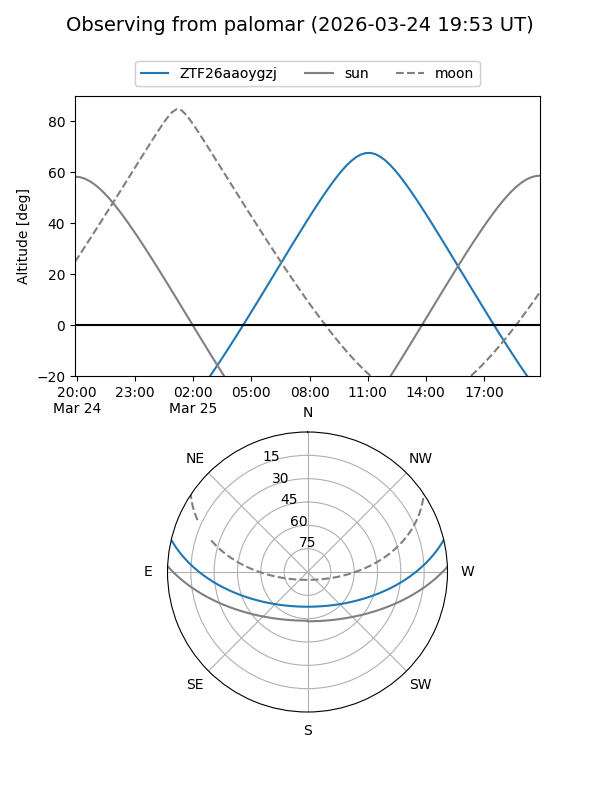

ZTF26aaoygzj
Target ZTF26aaoygzj at 2026-03-25 13:25
Aliases and brokers:
FINK: link
Lasair: link
ALeRCE: link
alt names
ZTF26aaoygzj (ztf,fink_ztf)
Coordinates:
equatorial (ra, dec) = 231.4768,+11.12486
equatorial (HMS+DMS) = 15:25:54.44,+11:07:29.50
galactic (l, b) = (16.7368,+50.37993)
Flags:
Photometry:
last ztfg=19.02, ztfr=18.45
1 ztfg, 1 ztfr detections
Lightcurve

Visibility


Additional plots